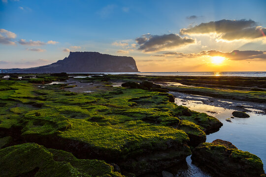
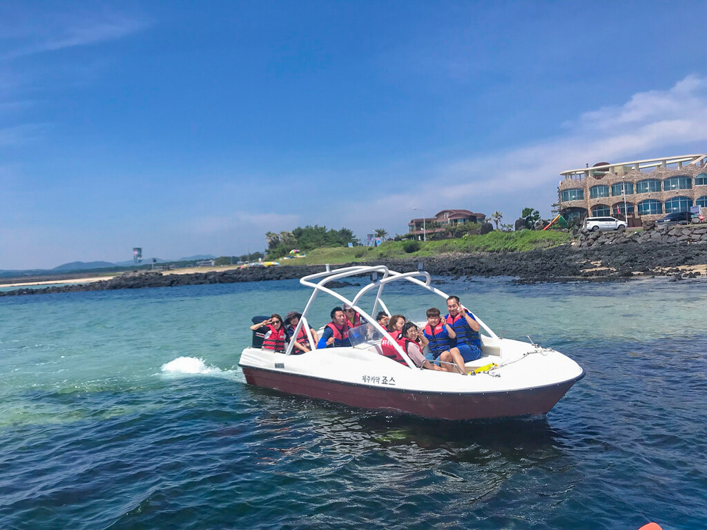
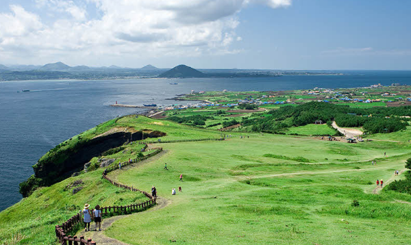
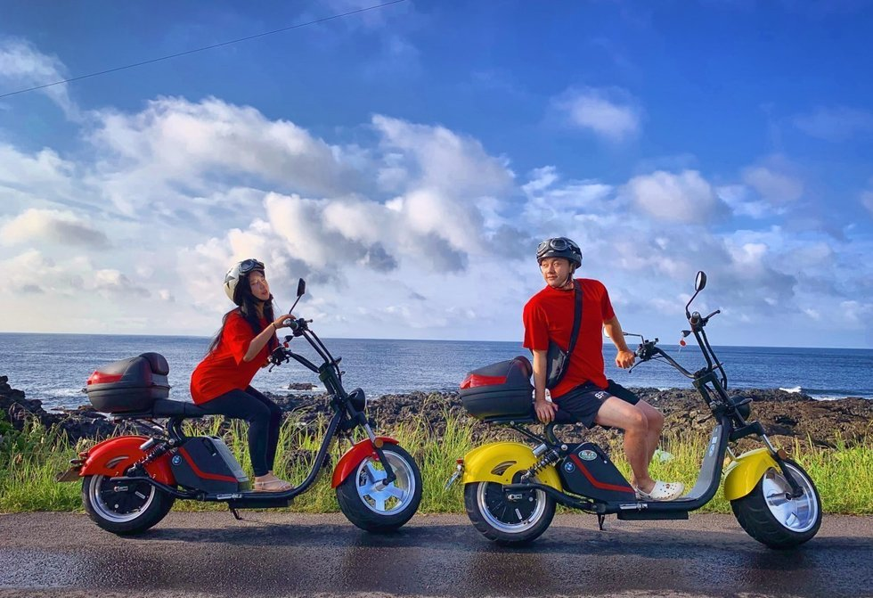

1. 성산일출봉
 
성산 일출봉은 제주도 동쪽 끝에 위치한 유네스코 세계자연유산입니다. 성산 일출봉은 화산 활동으로 형성된 높이 182m의 거대한 화산체로, 정상에는 약 600m의 둘레를 가진 분화구가 있습니다. 이 분화구는 말굽 모양으로, 약 99개의 바위 봉우리가 둘러싸고 있어 마치 거대한 성곽을 연상케 합니다. 성산 일출봉의 주요 매력 포인트는 바로 일출입니다. 특히 날씨가 좋은 날 일출봉 정상에서 바라보는 일출은 정말 장관입니다. 이곳에서는 매년 1월 1일에 ‘성산일출축제’가 열려 많은 관광객이 새해 첫 해돋이를 보기 위해 모여듭니다.
성산 일출봉의 주요 활동
등산: 정상까지 오르는 길은 비교적 완만하며, 약 20-30분 정도 소요됩니다. 등산로는 잘 정비되어 있어 누구나 쉽게 오를 수 있습니다. 정상에 오르면 제주 동부의 아름다운 해안선과 푸른 바다를 한눈에 볼 수 있습니다.
사진 촬영: 성산 일출봉 정상에서는 제주도의 다양한 풍경을 배경으로 멋진 사진을 찍을 수 있습니다. 특히 일출 시간에는 사진작가들이 많이 찾는 장소이기도 합니다.
성산 일출봉 보트 투어
성산 일출봉 보트 투어는 해안선을 따라 성산 일출봉의 아름다움을 바다에서 감상할 수 있는 인기 있는 활동입니다. 보트 투어는 성산항에서 출발하며, 약 30분에서 1시간 정도 소요됩니다.
성산 일출봉의 해안 절경: 육지에서 볼 수 없는 성산 일출봉의 다양한 각도와 해안 절벽을 가까이서 감상할 수 있습니다.
해양 생물 관찰: 운이 좋다면 돌고래를 비롯한 다양한 해양 생물을 볼 수 있습니다. 제주도의 맑은 바닷물 덕분에 해양 생태계가 잘 보존되어 있습니다.
스노클링 및 다이빙: 일부 투어에서는 스노클링이나 다이빙을 포함한 프로그램도 제공하므로, 제주도의 깨끗한 바다 속을 탐험할 기회도 가질 수 있습니다.
성산 일출봉 보트 투어는 다양한 업체에서 제공하고 있으므로, 여행 일정을 계획하실 때 미리 예약하시는 것이 좋습니다. 성산항 근처에 위치한 여행사나 관광 안내소를 통해 예약할 수 있습니다. 제주도의 아름다운 자연을 더욱 가까이서 즐기고 싶다면, 성산 일출봉 보트 투어를 꼭 경험해 보시기 바랍니다.
2. 우도
 
우도는 제주도 동쪽에 위치한 작은 섬으로, 독특한 자연경관과 아름다운 해변을 자랑합니다. 이름은 소의 머리 모양을 닮았다고 해서 '우도(牛島)'라고 불립니다.
성산 일출봉의 주요 매력 포인트는 바로 일출입니다. 특히 날씨가 좋은 날 일출봉 정상에서 바라보는 일출은 정말 장관입니다. 이곳에서는 매년 1월 1일에 ‘성산일출축제’가 열려 많은 관광객이 새해 첫 해돋이를 보기 위해 모여듭니다.
우도는 제주도에서 배를 타고 약 15분 정도 걸리는 거리로 쉽게 접근할 수 있습니다. 이 섬은 제주도의 축소판이라 불리며, 제주도의 매력을 압축적으로 경험할 수 있는 곳입니다.
우도의 주요 관광 명소
서빈백사: 아름다운 하얀 모래 해변으로, 청정한 바닷물과 어우러져 환상적인 풍경을 자아냅니다.
검멀레 해변: 검은 자갈이 깔린 해변으로, 해변 주변의 동굴 탐험과 함께 즐길 수 있습니다.
하고수동 해수욕장: 가족 단위 관광객에게 인기가 많은 해수욕장으로, 맑고 얕은 바닷물이 특징입니다.
홍조단괴 해변: 독특한 분홍색 해변으로, 홍조류가 만든 자연 현상을 볼 수 있습니다.
우도의 스쿠터 투어
우도는 자동차 통행이 제한되어 있어 자전거, 스쿠터, 전동카트를 이용한 투어가 인기입니다. 그 중에서도 스쿠터 투어는 자유롭고 편리하게 우도의 구석구석을 탐험할 수 있는 방법으로 많은 관광객들이 선택합니다.
스쿠터를 타며 우도 1바퀴를 돌면서 자유 여행을 즐길 수 있습니다.
우도 스쿠터 투어는 우도의 아름다운 자연경관을 자유롭게 즐기기에 최적의 선택입니다. 스쿠터를 타고 우도의 다양한 명소를 방문하며 잊지 못할 추억을 만들어 보세요.